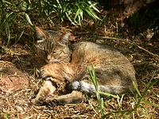
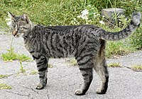

История происхождения
Согласно генетическому исследованию аутосомных маркеров и митохондриальной ДНК 979 домашних, диких и одичавших кошек с трёх континентов, в том числе барханных кошек (Felis margarita), все домашние кошки по материнской линии происходят как минимум от пяти представительниц подвида степная кошка (Felis silvestris lybica), имеющих разные гаплотипы митохондриальной ДНК. В митохондриальной гаплогруппе IV, специфической для ближневосточных и домашних кошек, идентифицировали 6 субклад и рассчитали время жизни общего предка — ок. 13 тыс. лет назад, что значительно превышает время предполагаемого одомашнивания ближневосточных кошек. Генетический анализ митохондриальной ДНК 209 кошек из 30 захоронений на территории Европы, Ближнего Востока и Северной Африки показал, что домашние кошки распространялись по миру двумя большими волнами. Первая волна имела место на заре сельского хозяйства 12—9 тыс. лет назад — в Плодородном полумесяце и его окрестностях домашние кошки расселились вместе с земледельцами по всему Ближнему Востоку. Несколько тысяч лет спустя вторая волна, вышедшая из Египта, охватила практически всю Европу и Северную Африку.
Обособление подвида Felis silvestris lybica произошло около 130 тысяч лет назад. Степная кошка до сих пор распространена по всей Северной Африке и в обширной зоне от Средиземноморья до Китая, где она обитает в зарослях саксаула в пустынях, в кустарниках возле водоёмов, в предгорьях и горах. Хотя мелкие дикие кошки разных подвидов могут скрещиваться между собой и давать потомство, результаты генетических исследований показали, что в филогенезе домашней кошки другие подвиды Felis silvestris, кроме степной кошки, участия не принимали.
Одомашнивание кошки произошло примерно 9500 лет назад на Ближнем Востоке в районе Плодородного полумесяца, где зародились и развивались древнейшие человеческие цивилизации. Одомашнивание кошки началось при переходе человека к оседлому образу жизни, с началом развития земледелия, когда появились излишки пищи и возникла необходимость их сохранения и защиты от грызунов.
Древнейшее археологическое свидетельство одомашнивания кошки было обнаружено на Кипре, где в ходе археологических раскопок было найдено совместное захоронение человека и кошки, которое датируется 7500 годом до н. э. Также было установлено, что остров Кипр был колонизирован выходцами из районов современных Анатолии (Турция) и Сирии.
Ранее учёные полагали, что первыми одомашнили кошек древние египтяне. Однако самые ранние свидетельства приручения кошек древними египтянами относились к 2000—1900 годам до нашей эры. А недавно было установлено, что в Древний Египет домашняя кошка попала, как и на Кипр, из Плодородного полумесяца (Анатолии). В настоящее время кошка является одним из самых популярных домашних животных.
Несмотря на то, что кошки были одомашнены достаточно давно, большинство кошек способны выживать в условиях нахождения вне человеческого жилья, пополняя ряды вторично одичавших кошек, так как в условиях бродячей жизни кошки обычно быстро повторно дичают. Вторично одичавшие кошки часто живут уединённо и охотятся в одиночку, но иногда образуют небольшие колонии из нескольких самок с котятами.